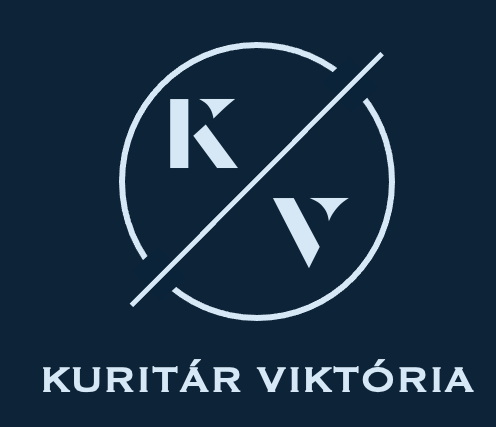

01 / CAMPUS
01 / CAMPUS2022 — jelenleg
MOL Campus
Process Management Expert
E2E folyamatok, működési modell, Lean–Kaizen fejlesztések és KPI-rendszer.

PROCESS MANAGEMENT & OPERATIONAL EXCELLENCE EXPERT
Hiszek az átlátható folyamatokban, az együttműködés erejében és a tudás megosztásában.

SZEMLÉLETEM
Pályafutásom során a telekommunikáció, az energiaszektor és a komplex szolgáltatási működés világában dolgoztam. Számomra a folyamatfejlesztés egyszerre jelent rendszerszemléletet, mérhető javulást és emberekkel való együttműködést.
ez az oldal egyszerre szakmai portfólió és nyitott tudástár: megosztom azokat a módszereket, gyakorlati tanulságokat és gondolatokat, amelyek másoknak is segíthetnek.
KARRIERÚT
Közös fókusz: átláthatóbb működés, fenntartható fejlesztés, kézzelfogható eredmények.
01 / CAMPUSProcess Management Expert
E2E folyamatok, működési modell, Lean–Kaizen fejlesztések és KPI-rendszer.
 02 / VODA
02 / VODASenior Process Development & Improvement Expert
Folyamatfejlesztés, digitalizáció és Six Sigma szakmai támogatás.
 03 / ENERGY
03 / ENERGYBusiness Process Regulatory Expert
Ügyfélszolgálati folyamatfejlesztés, belső auditok és tudásmenedzsment.
 04 / TELEKOM
04 / TELEKOMBusiness Process & Project Management
Ügyfélszolgálat, tudásmenedzsment, újratervezés és vezetői prezentációk.
A részletes szakmai történetek később érkeznek.
TUDÁSMEGOSZTÁS
Gyakorlati módszerek, ötletek és eszközök folyamatmenedzsmenthez, Lean–Six Sigmához és prezentációkhoz. A tudástár jelenleg készül.
HamarosanBLOG / INSIGHTS
Szakmai tanulságok, új ötletek, módszerek és személyesebb megfigyelések. Az első bejegyzések hamarosan érkeznek.
HamarosanKAPCSOLAT
Szakmai kérdésed, ötleted vagy együttműködési javaslatod van? Írj bátran.